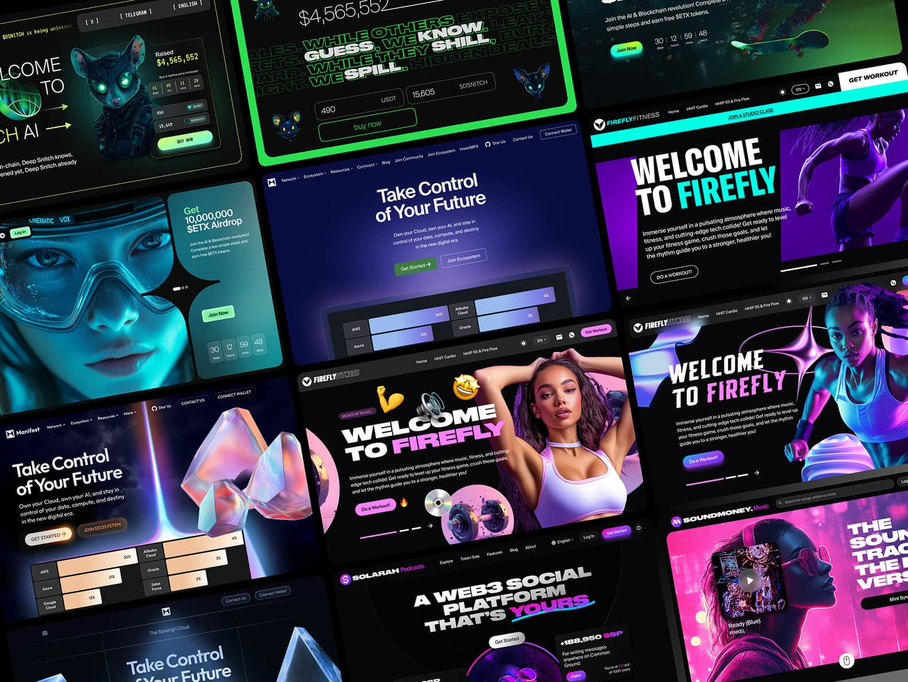
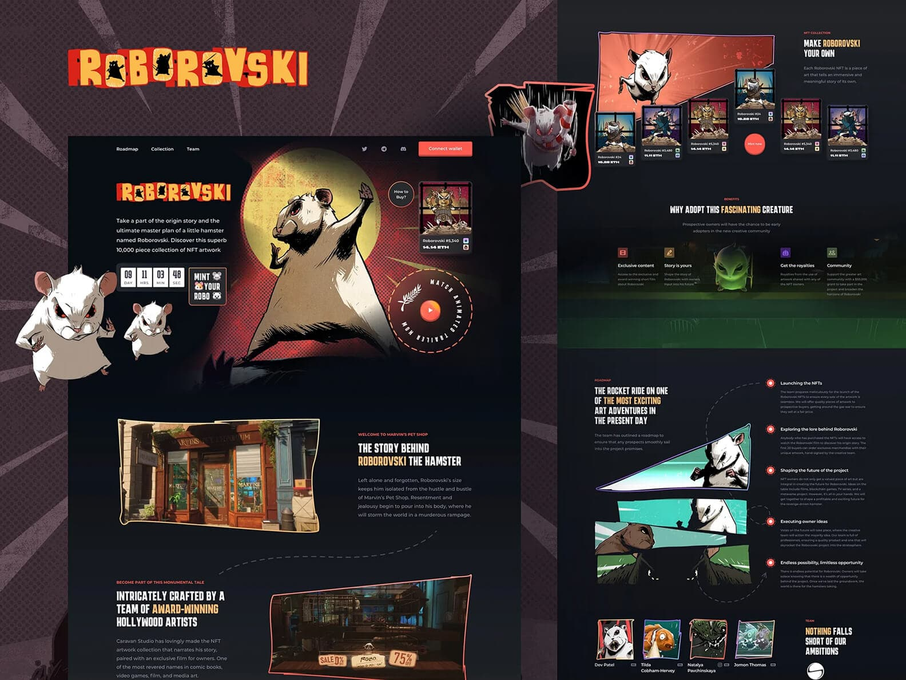

SENIOR UX/UI DESIGNER
WEEKLY DESIGN
SUPPORT FOR STARTUPS
SENIOR UX/UI DESIGNER DESIGN
SUPPORT FOR STARTUPS
Launch Your Startup Design ⚡️
Regular Price:
$1,497
Trial Week:
$997
vino_costa
EN
EN
1 0 Steps to Launch
a Digital Startup
Using Design Sprints
1 0 Steps
to Launch
your Startup
with Design
Sprints
A practical framework for rapidly building and testing
an MVP in uncertain markets
66,481 followers
When you're launching a digital product, your most valuable resource isn't money — it's time.
Your first mission isn't to build a product; it's to test a hypothesis — the idea that your concept actually solves a real problem for real people. And you need to do that as quickly and efficiently as possible.
An MVP — or Minimum Viable Product — isn't a stripped-down version of your grand vision. It's a scientific experiment: the simplest way to validate (or invalidate) your assumptions about the market. Building an MVP is not about construction — it's about learning.
The foundation of this approach is the Design Sprint — a one-week process for moving from concept to tested prototype. No more endless debates or vague assumptions. In just one focused week, you'll have tangible results that bring clarity and direction to your product idea.
This is your foundation for identifying a strong idea.
Write it down in one or two concise sentences:
Take a blank sheet of paper (or open a new doc) and fill out
the template for three potential ideas — even if some seem far-fetched.
Take a blank sheet of paper
(or open a new doc) and fill out
the template for three potential
ideas — even if some seem
far-fetched.
Now pick one — the most promising and the simplest to start with. That’s your working idea for the sprint ⚡️
You've chosen your idea.
The most dangerous next step? Designing the product for yourself.
You are not your user — you know too much, care too deeply, and can't see it through
a beginner's eyes.
The most dangerous next step?
Designing the product for yourself.
You are not your user — you know
too much, care too deeply, and can't
see it through a beginner's eyes.
To avoid this bias, you need a guide into your user's world: a persona.
"We believe that [type of user] experiences [specific problem], and will use
[our solution] to achieve [desired outcome]."
"We believe that [type of user]
experiences [specific problem],
and willuse [our solution]
to achieve [desired outcome]."
"We believe that young IT specialists and beginner investors feel anxious
and insecure using complex crypto exchanges, and that they'll use our
simple, guided interface to make their first trade without stress."
"We believe that young IT specialists
and beginner investors feel anxious
and insecure using complex crypto
exchanges, and that they'll use our
simple, guided interface to make
their first trade without stress."
A persona is a fictional yet realistic profile of your ideal user.
It helps your whole team stay aligned around the same human being.
Create it collaboratively (for example, in Miro).
A persona is a fictional yet realistic
profile of your ideal user.
It helps your whole team stay
aligned around the same human
being. Create it collaboratively
(for example, in Miro).
Name: Alex
Age: 28
Occupation: Python Developer
Tech literacy: High — but new to finance
Follow me here on Dribbble to catch new design
drops, fresh ideas, and behind-the-scenes looks
at my creative process.
Follow me here on Dribbble
to catch new design drops,
fresh ideas, and behind-the-
scenes looks at my creative
process.
For your chosen idea, create a persona profile.
Name
Age
Occupation
Goals (what do they want to achieve using your product?):
Pains (what frustrates them about existing solutions?):
Once your persona feels complete, every design and product decision you make should align with this user's perspective.
Keep asking yourself: "Would this make sense to my user? Would they find it easy?"
This persona becomes your north star in the product-creation process.
This tool helps you gain a deeper understanding of your persona’s context, mindset, and motivations.
Divide your workspace into four quadrants and fill them out:
Sees:
What do they observe
in their environment?
Hears:
What influences or advice
do they hear from others?
Thinks & Feels:
What emotions, fears, and
desires drive their decisions?
Says & Does:
What actions or words reveal
their attitudes and behavior?
Sees:
Tesla ads, Bitcoin price charts,
complex Binance dashboards.
Hears:
Friends saying, "Crypto is
a scam," or "You should've
bought earlier."
Thinks & Feels:
"I've missed the train." "This is
too complicated." "I want to try,
but it's scary."
Says & Does:
Googles "how to buy bitcoin
for beginners," reads articles,
installs apps, looks at interfaces
and deletes them.
Create an empathy map for your persona.
Sees: …
Hears: …
Thinks & Feels: …
Says & Does: …
Once complete, your idea is no longer abstract — it’s grounded in the real emotional
world of your user.
Every subsequent design or product decision should trace back to this understanding.
This empathy map is your compass in the storm of assumptions.
This is one of the most powerful exercises in building an MVP. Gather your team and open a shared board (physical or digital, e.g. Miro).
Step 1: In a 10-minute brainstorm, list every possible feature your product could ever include — registration, analytics, achievements, chat support, leaderboards, marketplaces, etc. Don’t filter; just write.
Step 2: Take three colors (or tags) and sort all features into three categories:
Your MVP = only red zone. Everything else is noise that slows learning and distracts from your hypothesis.
Run your own “ruthless feature cutting” session and record the results.
Once done, you’ll have a crystal-clear product core — a simple, testable
version ready for your sprint.
Take an A4 sheet and divide it into eight rectangles.
Your task: in 8 minutes, sketch 8 variations of your best idea — one per rectangle.
Set a timer: 60 seconds per sketch.
This fast pace shuts off your inner critic and sparks creativity.
Don’t overthink — just draw. After eight minutes, everyone will have eight
mini-sketches.
Then, pick the strongest one or merge elements from several to form your
final detailed sketch.
Afterward, hold a blind vote, review the results, and let the Product Owner
make the final call.
Your chosen sketch is static — but user experience is a story.
Your chosen sketch is static —
but user experience is a story.
Now, turn it into a storyboard: a sequence of 3–5 key screens that illustrate how users will interact with your prototype.
Now, turn it into a storyboard:
a sequence of 3–5 key screens that
illustrate how users will interact
with your prototype.
Use a large sheet (or Miro board). Draw rectangles representing each screen.
Use a large sheet (or Miro board).
Draw rectangles representing
each screen.
Your storyboard should show:
This storyboard becomes both your prototyping blueprint and your
testing scenario.
Now transform your storyboard into a clickable, realistic prototype — convincing
enough that users believe it’s a real product.
Now transform your storyboard into
a clickable, realistic prototype —
convincing enough that users
believe it’s a real product.
You’re not building; you’re creating the illusion of functionality to test hypotheses.
You’re not building; you’re creating
the illusion of functionality to test
hypotheses.
Tool of choice: Figma — ideal for collaborative, cloud-based sprint work.
Tool of choice: Figma — ideal
for collaborative, cloud-based
sprint work.
Finally, test internally. Walk through the entire user path and fix any “dead ends” before testing externally.
 Marketing-Driven Creative UI Hero SectionsNow you switch hats — from creators to researchers.
Your goal isn’t to sell or defend your prototype, but to learn from real user behavior.
According to Jakob Nielsen, testing with just five participants usually uncovers 80–90% of major usability issues.
So aim for quality, not quantity.
Each session should last 45–60 minutes and include:
Give realistic, goal-based tasks — not instructions.
Give realistic, goal-based tasks —
not instructions.
Instead of “Click Buy,” say “Imagine you want to purchase Bitcoin — show how
you’d do it.”
Instead of “Click Buy,” say “Imagine
you want to purchase Bitcoin —
show how you’d do it.”
Stay silent — don’t guide. Confusion moments are gold.
Stay silent — don’t guide. Confusion
moments are gold.
Thank them and ask follow-ups:
Don’t justify or lead (“You liked the chart, right?”). Just listen.
After testing, gather your team.
Each member writes key observations on sticky notes — one per note
(“found button easily,” “got confused by wording,” “hesitated due to fees”).
Each member writes key
observations on sticky notes —
one per note (“found button easily,”
“got confused by wording,”
“hesitated due to fees”).
Group them by themes — “positives,” “navigation issues,” “unclear copy,”
“trust concerns.”
Patterns that repeat across three or more users are your core insights.
Now that you have insights, it’s time to decide what to fix first.
Use a simple but powerful tool — the Value vs. Effort Matrix.
Quick Wins — e.g.,
renaming "Trade"
to "Buy." Easy fix,
big impact.
e.g., renaming "Trade" to "Buy."
Easy fix, big impact.
Strategic Initiatives —
e.g., redesigning onboarding.
e.g., redesigning
onboarding.
Minor Tweaks —
do them later.
do them later.
Don’t Do — time traps.
time traps.
Create a backlog from this matrix — a prioritised list of hypotheses, tasks,
and improvements.
The Product Owner should maintain and update it after every sprint, using both test
results and market feedback.
In doing this, you’re not just closing a sprint — you’re establishing a culture
of continuous improvement.
In doing this, you’re not just closing
a sprint — you’re establishing
a culture of continuous improvement.
Each cycle brings your product one step closer to meeting real market needs.
You turn uncertainty into a repeatable, data-driven process.
You turn uncertainty into
a repeatable, data-driven process.
Using the Value–Effort matrix:
Your MVP might still be in development, but your landing page
should be live before launch.
Your MVP might still be
in development, but your landing
page should be live before launch.
It’s your testing ground for demand and your first audience touchpoint.
It’s your testing ground for demand
and your first audience touchpoint.
Use no-code builders like Webflow or Wix to launch fast.
 Roborovski NFT Landing PageA successful launch is a result of preparation, not luck.
A successful launch is a result
of preparation, not luck.
By validating demand, collecting leads, and defining metrics early, you turn
your launch into a controlled experiment — one whose results you can
measure, learn from, and build upon.
By validating demand, collecting
leads, and defining metrics early,
you turn your launch into a
controlled experiment — one whose
results you can measure, learn from,
and build upon.
Follow this page to stay tuned for regular
updates — I’ll be sharing new design projects, case
studies, and creative experiments you won’t want to miss.
Follow this page to stay
tuned for regular updates —
I’ll be sharing new design
projects, case studies,
and creative experiments
you won’t want to miss.
Get a Senior UX/UI Designer fully focused on your
product for one week. In just 7 days, I’ll run a
complete design sprint: user flows, clickable
prototypes, and stunning
UI that attracts investors and users.
Get a Senior UX/UI Designer for a full 7-day sprint. Clean flows, prototypes, stunning UI.